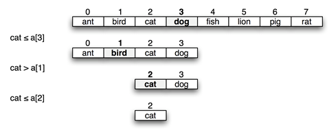

Binary Search
Now that you know the elements are in alphabetical order, (sorted), you can adopt an more efficient approach: divide the array in half and compare the key you’re trying to find (cat in the illustration below) against the element closest to the middle, using the order defined by ASCII, which is called lexicographic order.

If the key you’re looking for precedes the middle element, then the key—if it exists at all—must be in the first half. If the key follows the middle element in alphabetic order, you only need to look at the elements in the second half.
Because you can discard half the possible elements at each step in the process, it is much more efficient than linear search. Binary-search is a divide-and-conquer algorithm which is naturally recursive.
 This course content is offered under a
CC
Attribution Non-Commercial license. Content in this course
can be considered under this license unless otherwise noted.
This course content is offered under a
CC
Attribution Non-Commercial license. Content in this course
can be considered under this license unless otherwise noted.